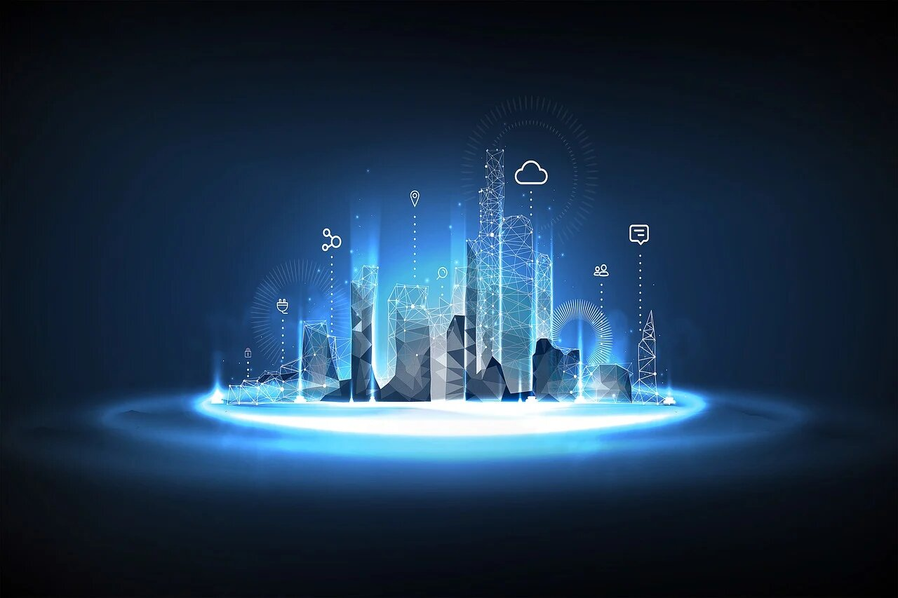

Latest Tech Innovations
Discover the latest innovations in technology, from AI advancements to new gadgets.
Recent technological innovations are reshaping the way we live and interact with the world. Autonomous AI agents are advancing beyond simple tasks, enabling complex activities like booking travel or managing daily errands without human intervention. Companies like Apple are redefining home automation with smart-home displays that seamlessly integrate various household functions. Augmented reality (AR) is taking center stage with advanced smart glasses from Meta, revolutionizing digital interactions in real-world settings. AI-enhanced weather forecasting models, such as Google's GenCast, are improving the accuracy of predictions, aiding better preparedness for natural events. Sustainability is also a focus, with data centers adopting cleaner energy sources, including nuclear power, to minimize their environmental impact. In healthcare, wearable devices are evolving to monitor longevity and biological age, promoting proactive health management. Meanwhile, autonomous vehicles from companies like Waymo and Tesla are transforming transportation with self-driving services. These innovations collectively signal a shift toward more autonomous, sustainable, and user-centric technological ecosystems.